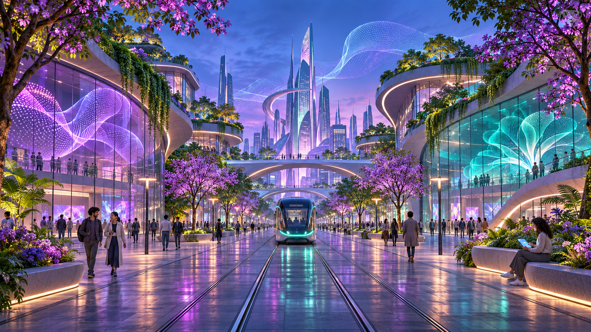

GENESIS AI / ИНТЕРАКТИВНАЯ ВЫСТАВКА
Идея становится
миром.
Один замысел — город будущего. Исследуйте, как генеративный ИИ создаёт визуальные истории, как запрос управляет результатом и где необходима проверка человека.
Начать маршрут: технологии →01 / ГОРОД БУДУЩЕГО ChatGPT Images · 05.11.2026
01 / О ВЫСТАВКЕ
Воображение
под контролем.
Генеративная модель создаёт новые материалы по запросу, опираясь на закономерности обучающих данных. Впечатляющая картинка не гарантирует точность: мы показываем запросы, реальные результаты, ограничения и роль человека.
Как работают модели →02 / МАРШРУТ
Изучите три эксперимента
03 / ГЛАВНАЯ МЫСЛЬ